ბაბილონი
აქ უამრავიწიგნია რომლითაც შეიცნობთ ბაბილონს და მის ძირ ძველ მაგიას
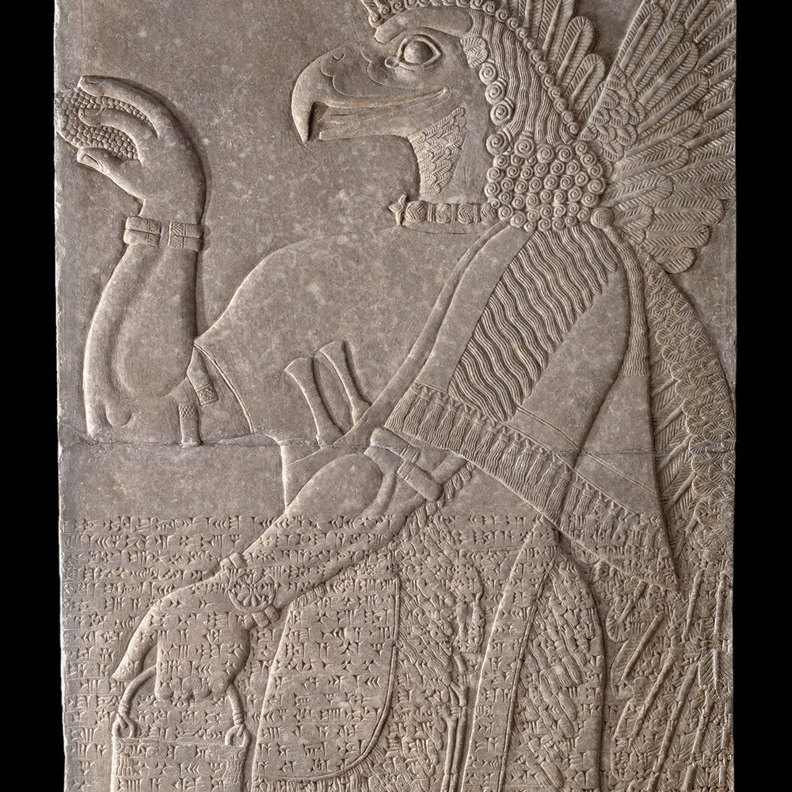
შუმერული და აქადური შელოცვები
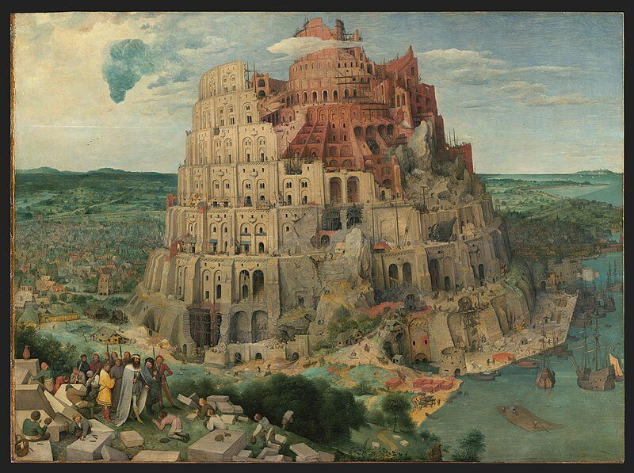
ღმერთების შეკრება. მესოპოტამიური რელიგიის ძალა
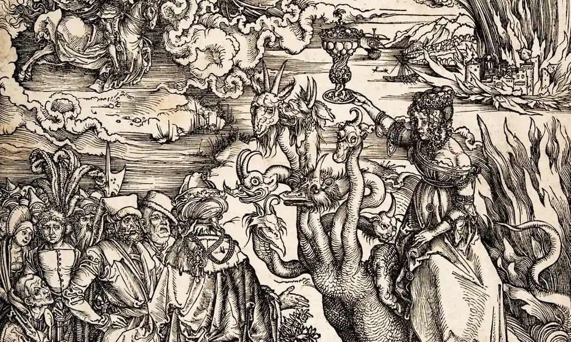
ახალი საზეიმო პრაქტიკა აიანისის ციხესიმაგრეში ურარტული წმინდა ხის რიტუალი
ლამასტუს შელოცვებისა და რიტუალების კანონიკური სერიის გამოცემა და მასთან დაკავშირებული ტექსტები ძვ.
ბაბილონის დაბადების ნიშნები
ბაბილონის მაგია და ჯადოქრობა

ბაბილონის წმინდა სიტყვები ძალაუფლების-მისტიკური კარიბპჭის სიცოცხლისაკენ,რომელიც მდიდარია სიყვარულითა და ჯანმრლთელობით
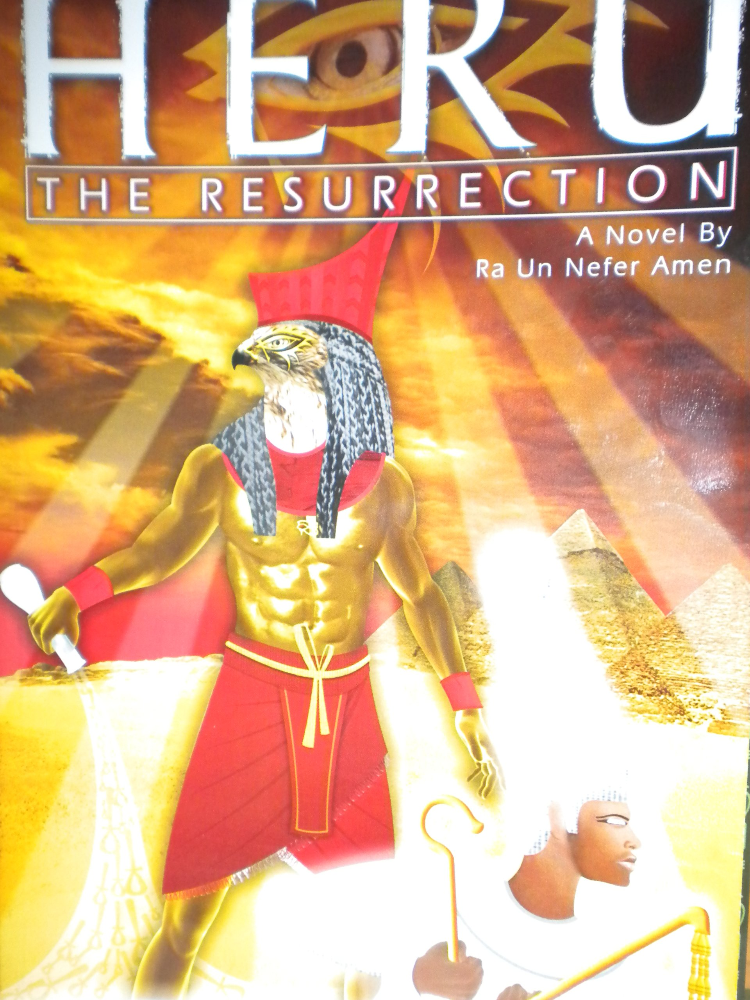
ბაბილონური ჯადოქრობის ლიტერატურის შემთხვევის შესწავლა
მესოპოტამიის ჯადოქრობის საწინააღმდეგო რიტუალების კორპუსი
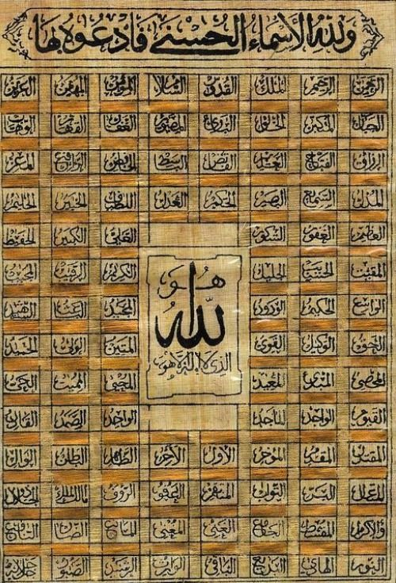
სწორი შუმერული ფონეტიკა
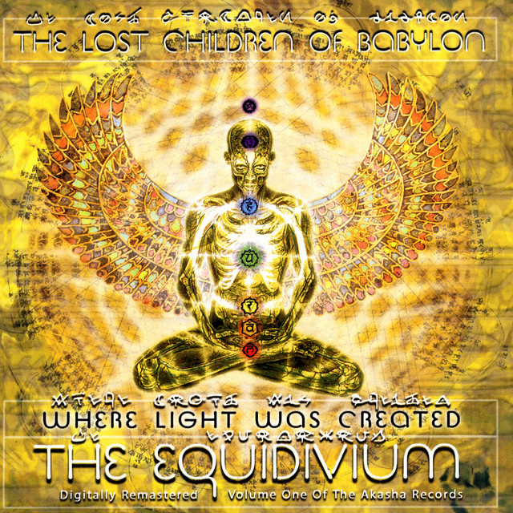
ეშმაკები და ბაბილონის ბოროტი სულები

უდუგ ჰულის წინამორბედები
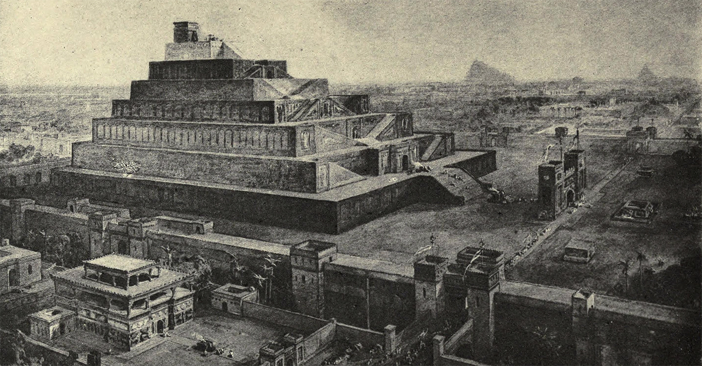
ჯადოსნური და ბოროტი დემონების განკურნება. კანონიკური უდუღ-ჰული შელოცვები
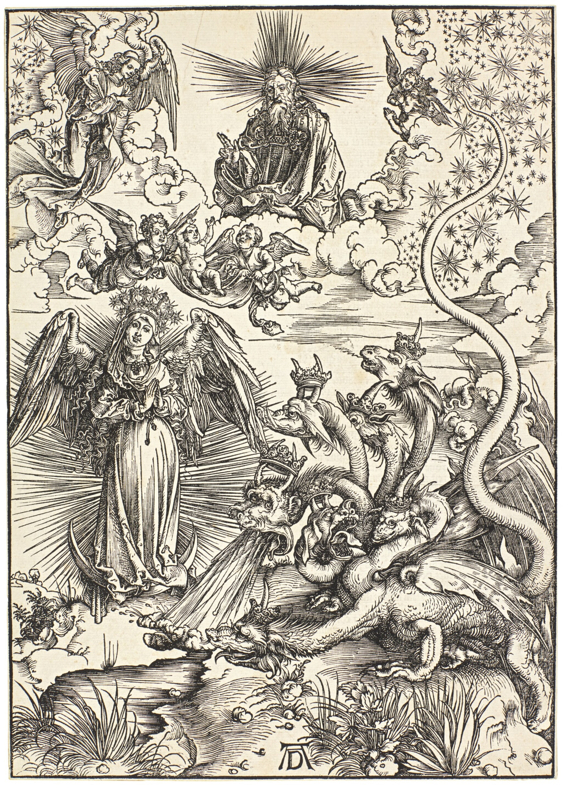
შელოცვები და ჯადოქრობის საწინააღმდეგო ტექსტები უგარიტიდან
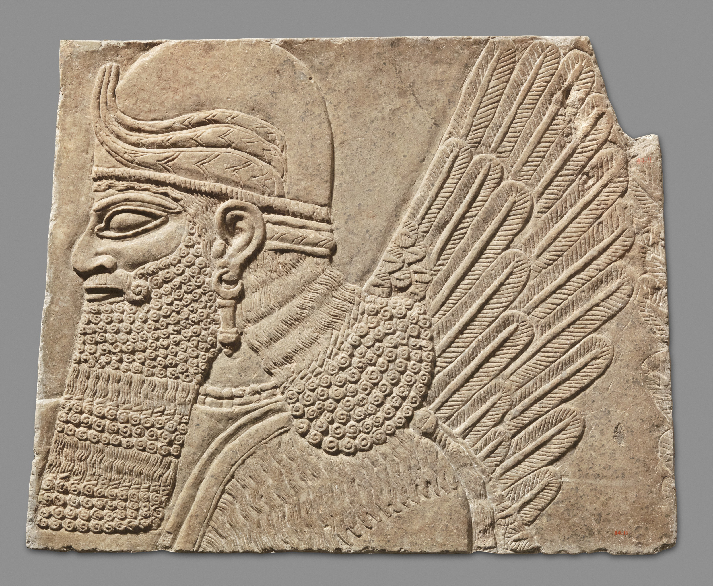
ინანა. ზეცის დედოფალი (მისი ჰიმნები და მოთხრობები შუმერიდან)
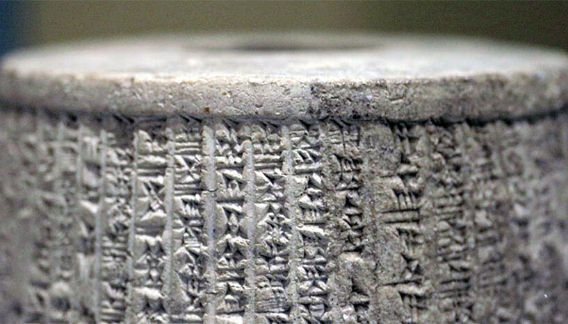
მასილია კართაგოს მსხვერპლშეწირვის ტაბლეტები ბაალის თაყვანისცემის შესახებ (1897)
სიმდიდრე დამალული საიდუმლო ადგილებში
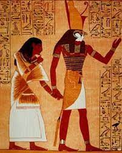
ღმერთი დაგანი ბრინჯაოს ხანის სირიაში
ჯადოქრობა, მაგია და მკითხაობა ძველ მესოპოტამიაში
.png)